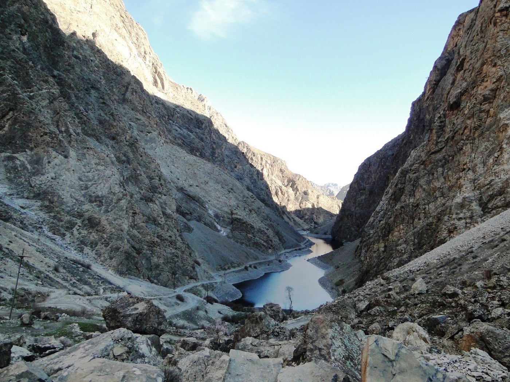

Route
- Start: Samarkand
- Crossing: border entry / mountain road start
- Off-road: key panoramic points
- Return: Samarkand
Fann Mountains • jeep format
For travelers who want deeper off-road sections and mountain panorama viewpoints in one active day.

Send a request and we will tailor route points around your preferences.
This route is built for travelers who want a more active 4x4 format with panoramic stops and flexible route planning.
Best for small private groups, photo trips and travelers who want more mountain viewpoints in one day.
A 4x4 vehicle opens access to more demanding mountain sections and viewpoint options than a standard transfer format.
Departure from Samarkand, flexible off-road pacing, scenic photo stops and same-day return.
This route focuses on 4x4 access, scenic viewpoints and a more flexible off-road format.
Yes. It is one of the best options if you want more panorama stops and mountain scenery in one day.
Price depends on route length, group size and how many off-road points you want to include.